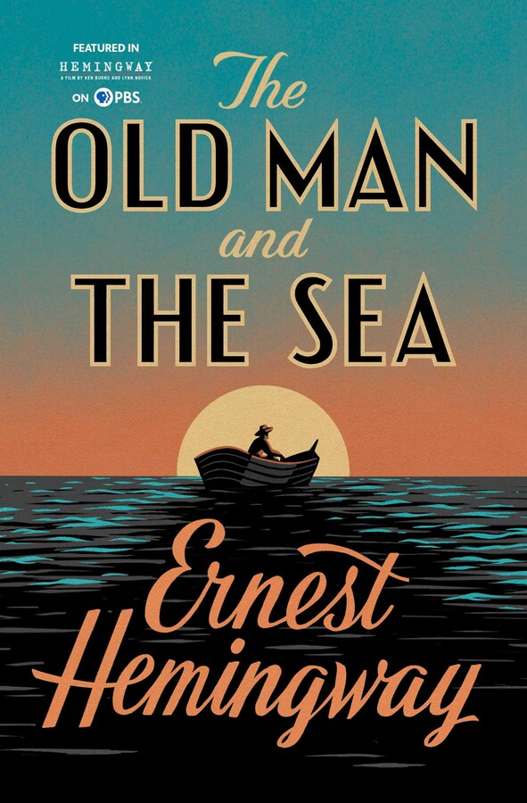

New Arrivals

The Old Man and the Sea is a Pulitzer Prize winning novella written by Hemingway and first published in 1952. This last major work of his. Set in Havana, it tells the story
of an aged Cuban fisherman suffering from an eighty-four day unlucky streak. On the eighty-fifth day he encounters a Marlin and battles to bring it back home.
The Old Man and the Sea reinstated Hemingway's place in the world of Literature as his previous work, a full novel Across the River and into the Trees, was not recieved by critics very well.